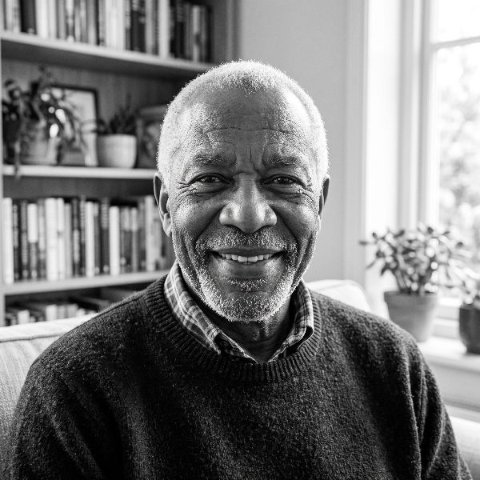
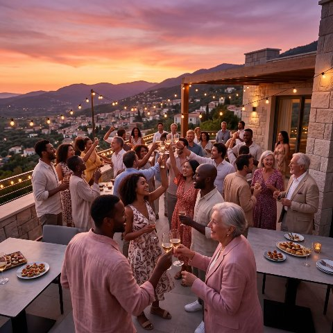
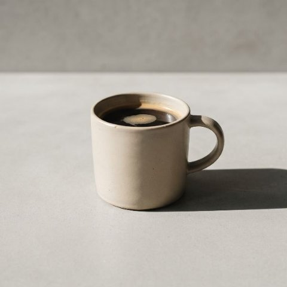
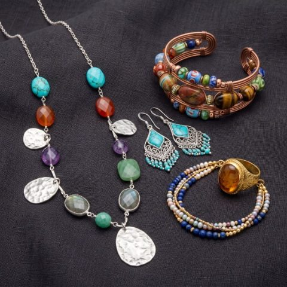
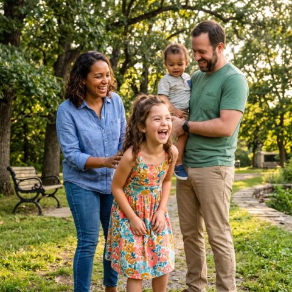
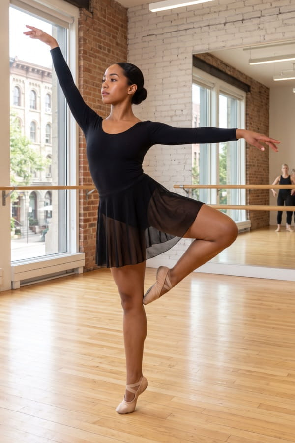
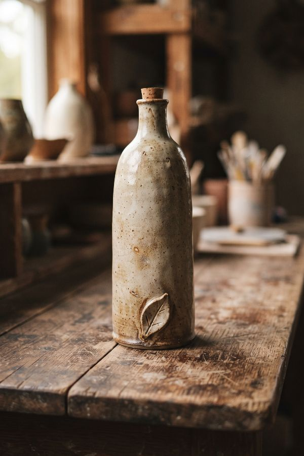
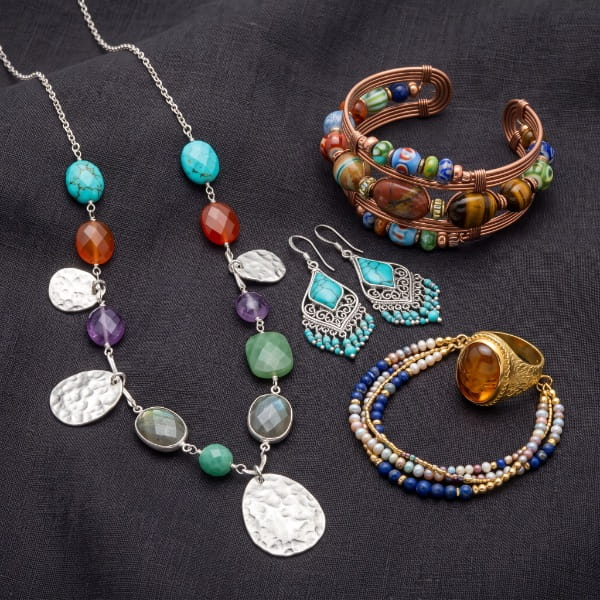
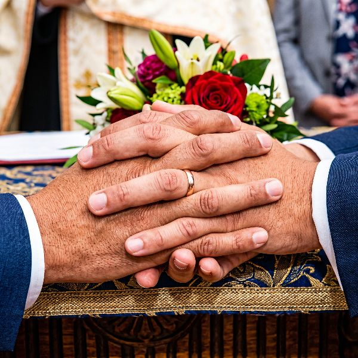
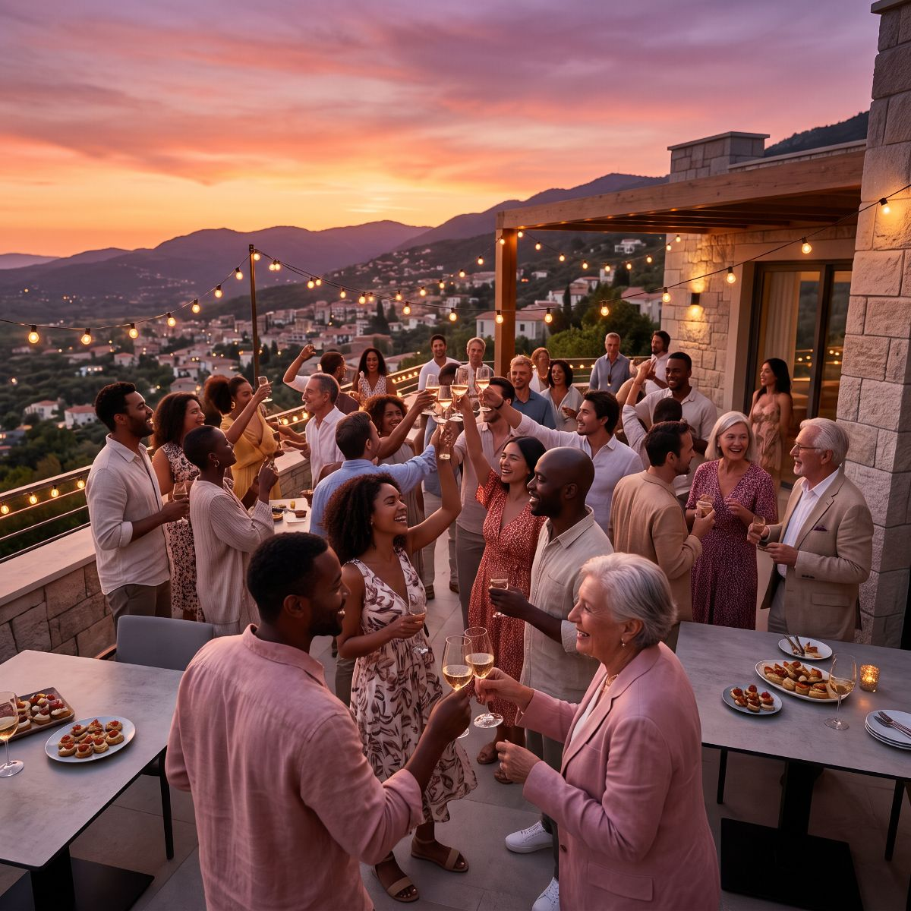

Galería
Una selección de lo que hemos fotografiado entre 2024 y 2026.
480
sesiones realizadas
12
años de trayectoria
36
marcas acompañadas
98%
volvería a contratarnos
Explorar por categoría
Cada enlace lleva a su sección dentro de esta misma página.
Todo el trabajo






Retrato
Sesiones individuales, familiares y de perfil profesional.

Producto
Catálogos para tiendas en línea y material para redes sociales.


Eventos
Bodas, graduaciones y actividades corporativas.


¿Le interesa trabajar con nosotros?
Cuéntenos qué necesita y le respondemos dentro de las siguientes 48 horas hábiles.
Solicitar una sesión